Restaurant chinois · Grand'Rue · Mons
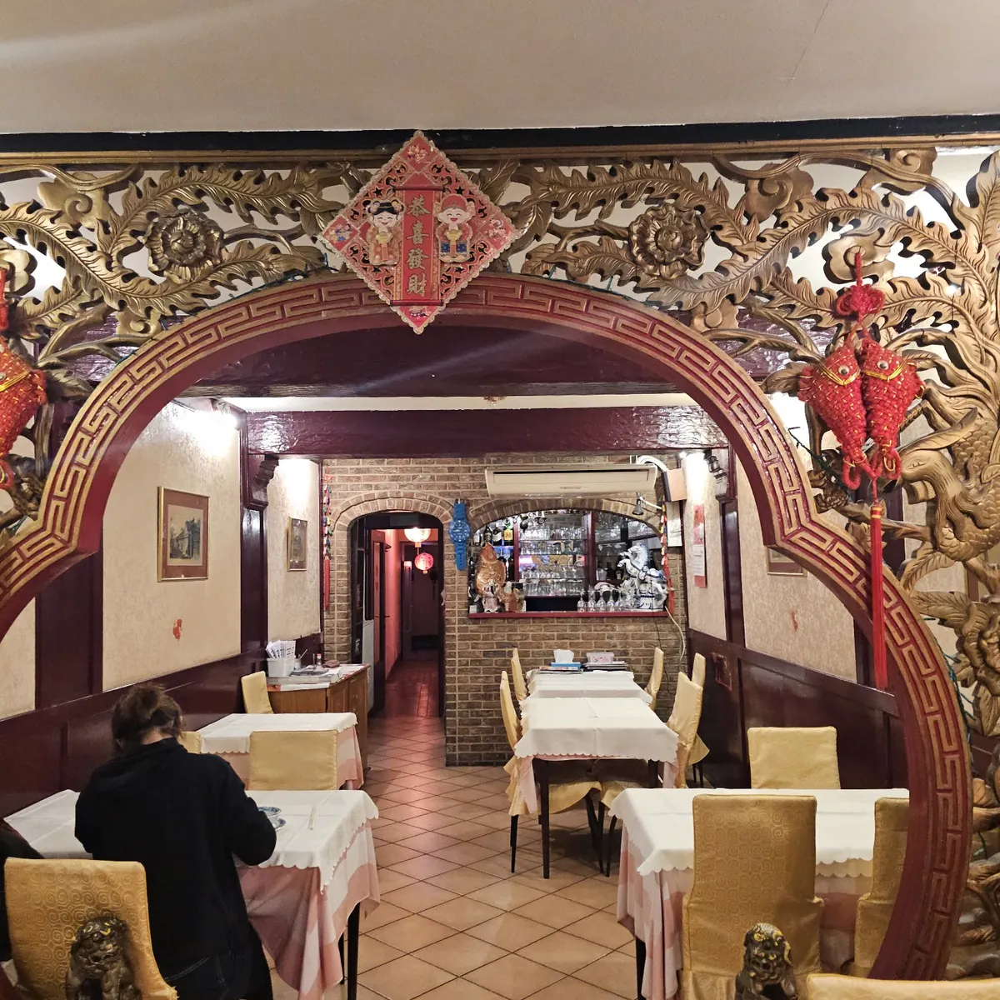
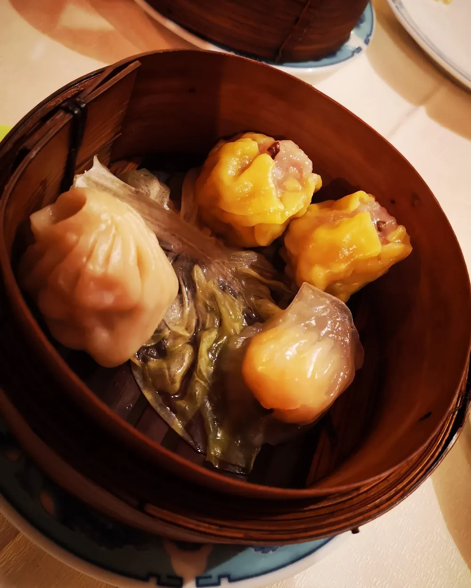
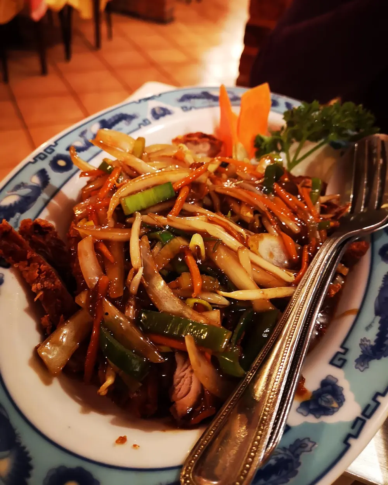
Hong KongGarden
Derrière l'enseigne au néon de la Grand'Rue, une salle calme, des plats qui arrivent fumants sur la fonte et des gérants que les habitués disent adorables
.
Midi et soir · fermé le mardi
- 4,3 sur Google · 109 avis
- Midi et soir, 6 jours sur 7
- On s'y parle sans hausser la voix
La carte
Ce que les clients ont commandé
Poulet curry, canard, nouilles sautées, table de riz : voici la carte telle que la racontent ceux qui sont venus, plat par plat, avec leurs mots.
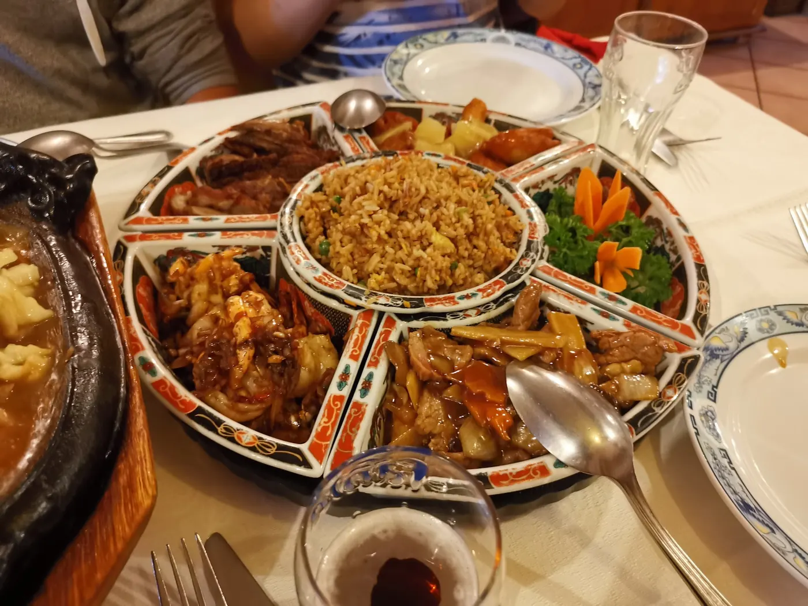
Hong Kong Garden
Les plats cités dans les avis Google
- Canard aux légumes« coupé assez fin et croustillant »vincent F.
- Poulet curryvincent F.
- Cuisses de grenouillesvincent F.
- Potage de raviolis« riche en goût »Alex
- Les starters« parfaitement cuisinés »Alex
- Croquettes de soja au pouletLeapeppermint
- Nouilles sautées famille chinoiseLeapeppermint
- Coquilles Saint-JacquesLeapeppermint
- Table de riz pour 2 personnesLeapeppermint
Toute la carte et les menus : 065 34 89 74
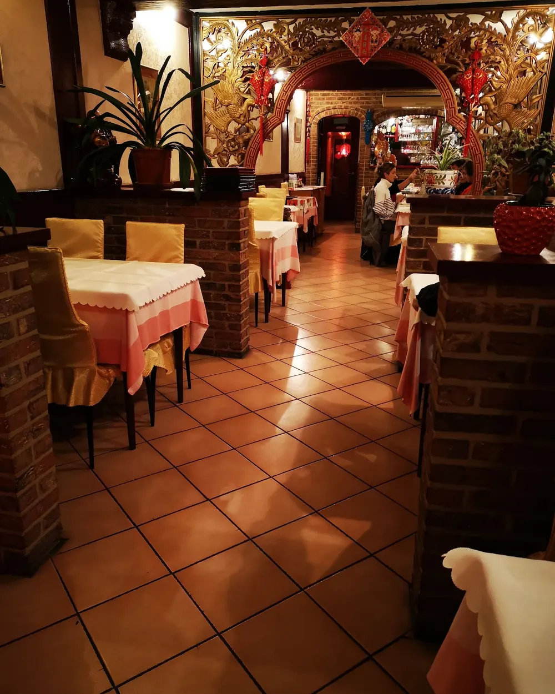
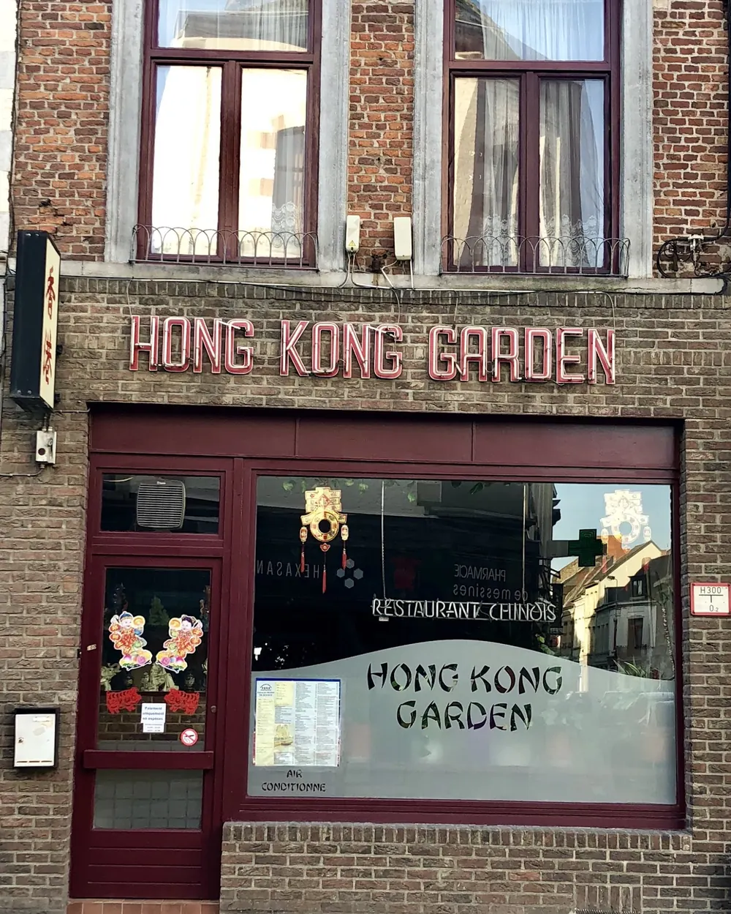
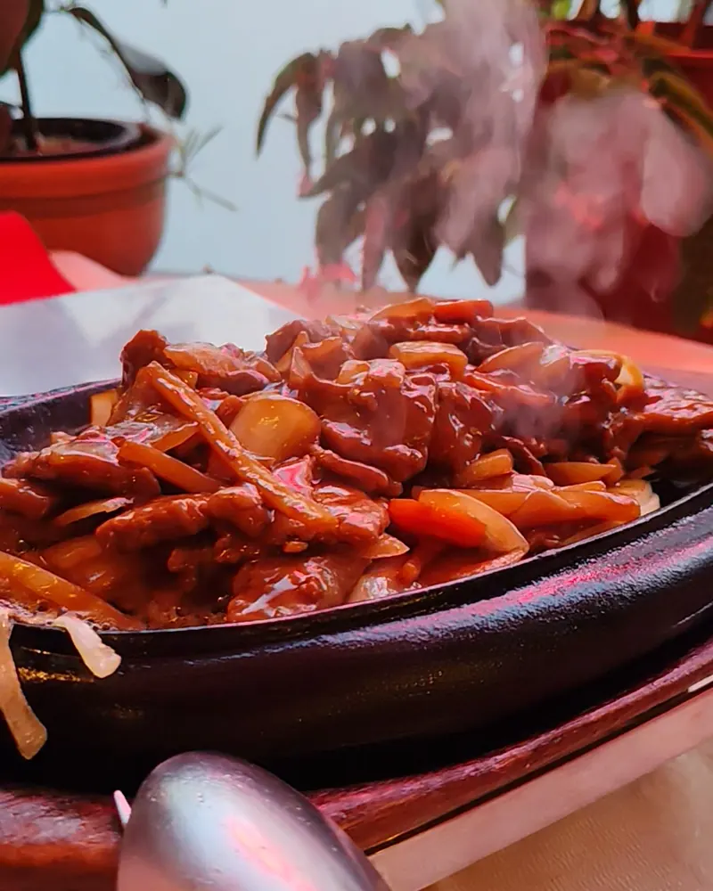
La salle
Au centre de Mons, on s'entend parler
Tomettes au sol, nappes roses, lanternes rouges et une grande porte ronde sculptée qui ouvre sur la seconde salle. Pas de musique forte : ici, le repas prend son temps.
« Il fait très calme, c'est très relaxant de pouvoir parler à son aise sans devoir hausser la voix. »
vincent F., avis Google
« Accueil avec beaucoup de gentillesse. »
Loic P.« Les gérants sont adorables. »
Leapeppermint« Resto familiale, clientèle d'habitués »
BakhtanLes plats
Sur la fonte, au panier vapeur, dans la porcelaine bleue
Photographiés à table par les clients : les plaques de fonte qui grésillent, le pot de terre, les bouchées vapeur, et la vaisselle à liseré bleu de la maison.
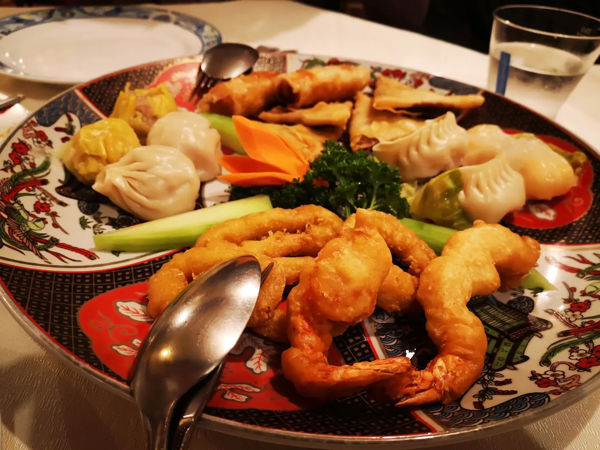
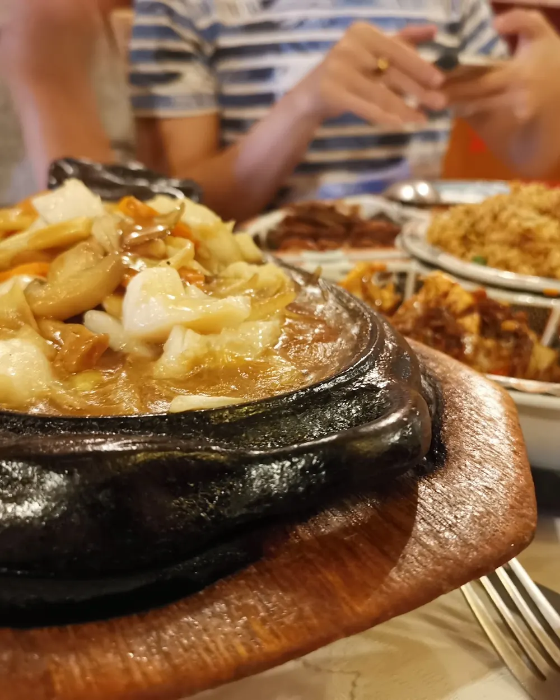
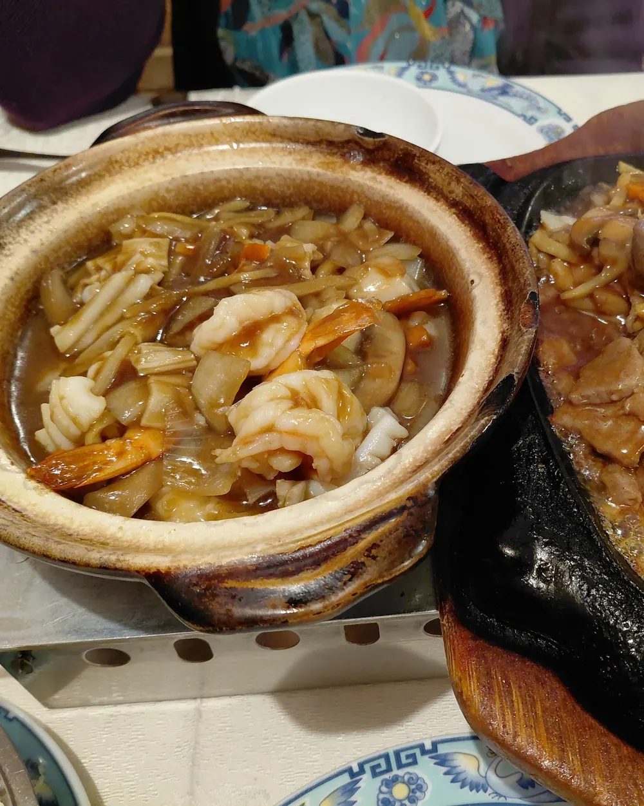
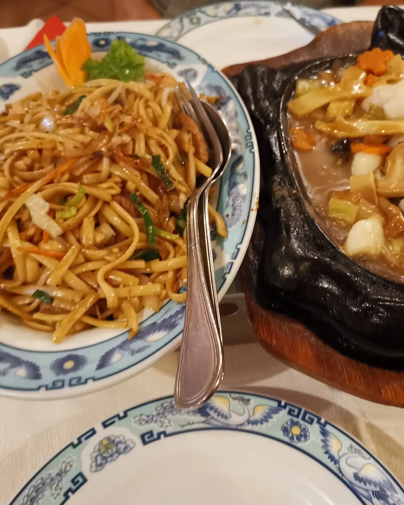
Faites glisser pour voir les plats
Photos prises à table par les clients, sur la fiche Google du restaurant.
Réserver
Une table pour deux, ou pour six amis
Le jour, le service, le nombre de couverts : trente secondes, même à minuit, même le mardi quand la salle est fermée.
Avis
« Sans jamais être déçu »
Des habitués de longue date et des clients de passage : ce qu'ils ont écrit sur Google après leur repas.
Horaires et accès
Midi et soir, dans le centre de Mons
| lundi | 11 h 30 – 14 h · 17 h 30 – 22 h 30 |
|---|---|
| mardi | fermé |
| mercredi | 11 h 30 – 14 h · 17 h 30 – 22 h 30 |
| jeudi | 11 h 30 – 14 h · 17 h 30 – 22 h 30 |
| vendredi | 11 h 30 – 14 h · 17 h 30 – 22 h 30 |
| samedi | 11 h 30 – 14 h · 17 h 30 – 22 h 30 |
| dimanche | 11 h 30 – 14 h · 17 h 30 – 22 h 30 |
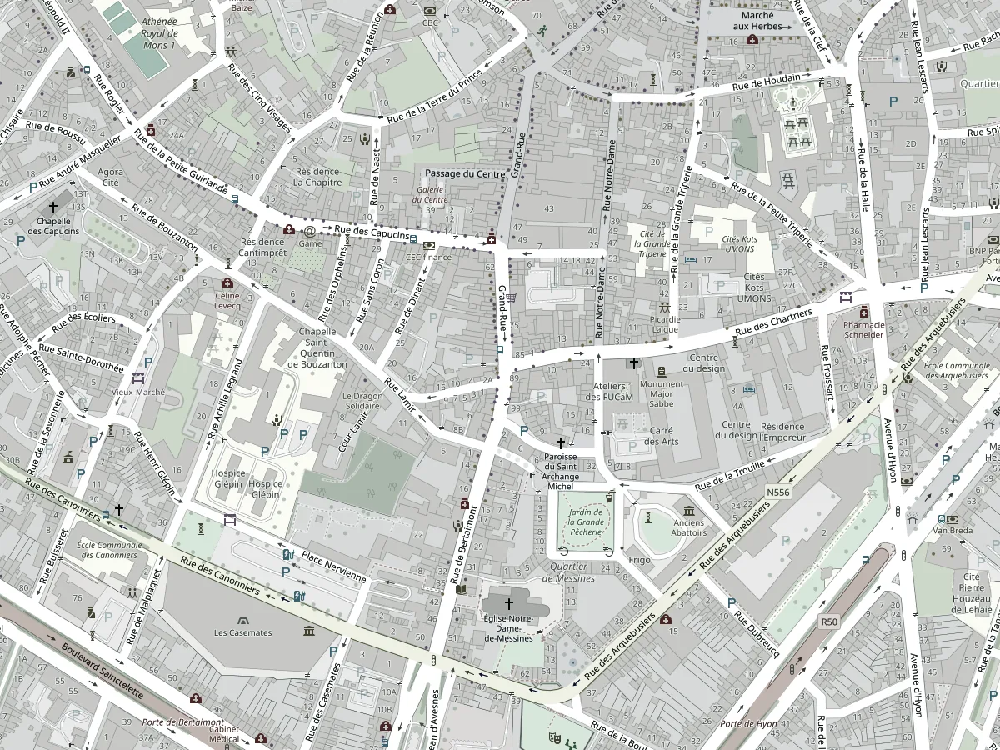
Itinéraire © OpenStreetMapFermé le mardi
Les six autres jours, deux services : le midi dès 11 h 30, le soir dès 17 h 30.
La carte et les menus
Pour un plat, un menu ou une grande tablée, un appel au 065 34 89 74.